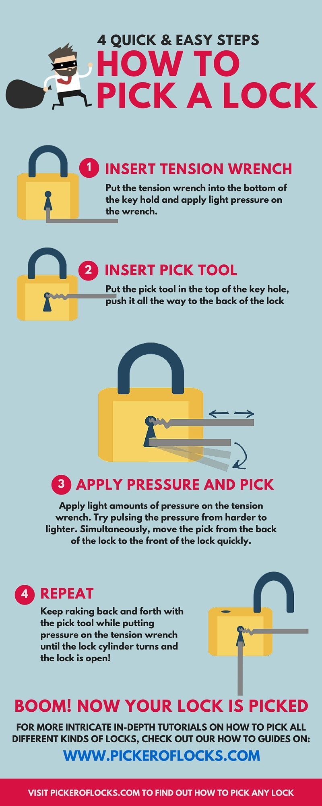

Why you want to know how
Understanding how locks function gives you the foundation to open them responsibly — whether for hobby, emergency preparedness, or improving personal security. Knowing the internal mechanics of pin tumblers, drivers, and shear lines helps you recognize vulnerabilities and choose better protection for your own property.
Other tools
A basic lockpicking kit usually includes hooks, rakes, tension wrenches, and specialty picks. Each tool serves a unique purpose — whether you’re practicing single-pin picking for precision or raking for speed. Knowing when to use each tool is key to mastering the craft.
How to Pick a Lock — 4 Quick & Easy Steps
Step 1 — Insert Tension Wrench
Place the tension wrench into the bottom of the keyhole. Apply light and steady rotational pressure, just enough to create tension on the lock cylinder.
Step 2 — Insert Pick Tool
Insert your pick tool into the top of the keyhole. Push it gently all the way to the back of the lock.
Step 3 — Apply Pressure and Pick
With light pressure on the tension wrench, begin lifting the pins inside the lock. Feel for each pin to “click” into place at the shear line. Keeping the correct tension is the most important part.
Step 4 — Repeat Until the Lock Opens
Continue lifting the pins while maintaining tension. Once all the pins are set, the lock cylinder will rotate and the lock will open.
Disclaimer
All information provided on this website is for educational and lawful purposes only. Always ensure you have explicit permission before attempting to pick any lock. Unauthorized entry is illegal and can result in serious consequences.